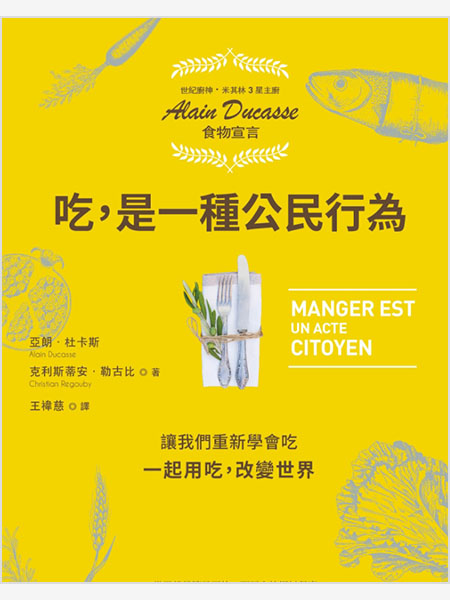

合適的工作及經濟成長
促進包容且永續的經濟成長，讓每個人都有一份好工作
我不是懶，只是拒絕過勞……從中國到南韓、日本、台灣，4組數據看懂為何年輕人選擇「躺平」
詳全文責任消費及生產
促進綠色經濟，確保永續消費及生產模式
促進包容且永續的經濟成長，讓每個人都有一份好工作
促進綠色經濟，確保永續消費及生產模式
失控企業下的白老鼠：勞工如何落入血汗低薪的陷阱？
共享經濟如何讓人變幸福？：利他‧分享‧在地化，我們已進入第四消費時代
區塊鏈：不可不知的金融大未來
流動生活：實現二地居住、自創工作的新可能
全島總罷工：殖民地臺灣工運史
萬物的價值：經濟體系的革命時代，重新定義市場、價值、生產者與獲利者
不工作的世界：AI時代戰勝失業與不平等的新經濟解方
除了資本主義，我們有更好的方法解決當前的經濟危機嗎？：我們可以從史密斯、馬克思和凱因斯學到什麼？
技術陷阱：從工業革命到AI時代，技術創新下的資本、勞動力與權力
從AI到AI+：臺灣零售、醫療、基礎建設、金融、製造、農牧、運動產業第一線的數位轉型
當ADHD患者踏入職場：無法專注的魚腦時代，如何與工作和平共處？
大數據資本主義：金融資本主義退位，重新定義市場、企業、金錢、銀行、工作與社會正義
從沙龍到聯合國 ：歐萊德創辦人葛望平的綠色模式
B型選擇：綠藤－找不到喜歡的答案，就自己創造
吃，是一種公民行為：讓我們重新學會吃，一起用吃，改變世界！（米其林主廚Alain Ducasse食物宣言）
明日的餐桌（暢銷增修版）：愛食物、零浪費，生態綠創辦人帶你走訪世界食物革命運動現場，用吃守護地球，打造綠色食物生態系
種日子的人：鄉居十年，手機和鋤頭並用的有機書寫
跟著台達蓋出綠建築（1）：引領綠色廠辦風潮
推动绿色发展：生态治理与结构调整
全球绿色治理：直面经济增长与环境升级
環保一年不會死：不用衛生紙的紐約客零碳生活實驗，連包尿布的小孩和狗都在做的永續溫柔革命！（二版）

一本書讀懂綠色成長
餐桌上的真食：用腦決定飲食風景，吃出環境永續
我想安心吃飯：消費決定生產，良食從餐桌開始